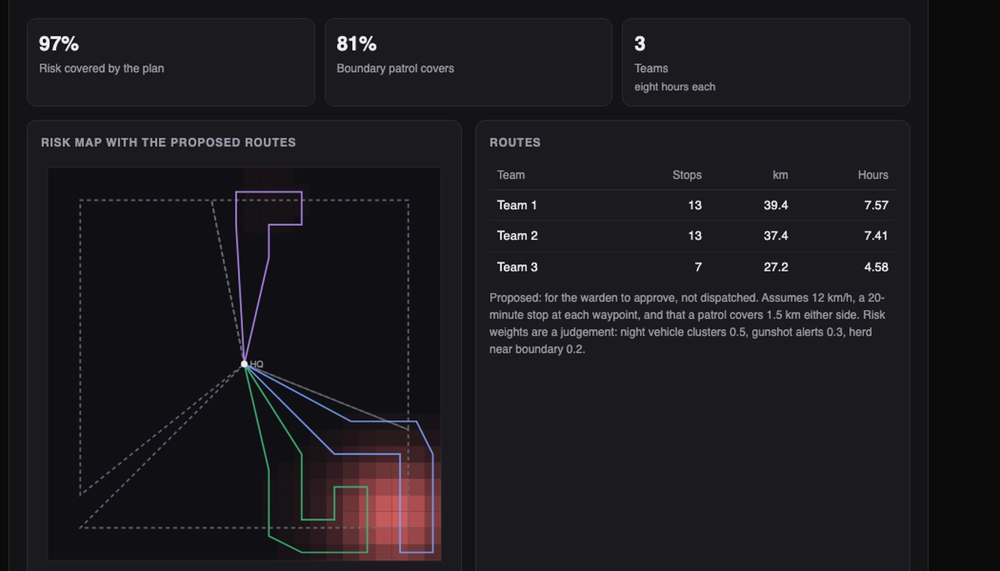
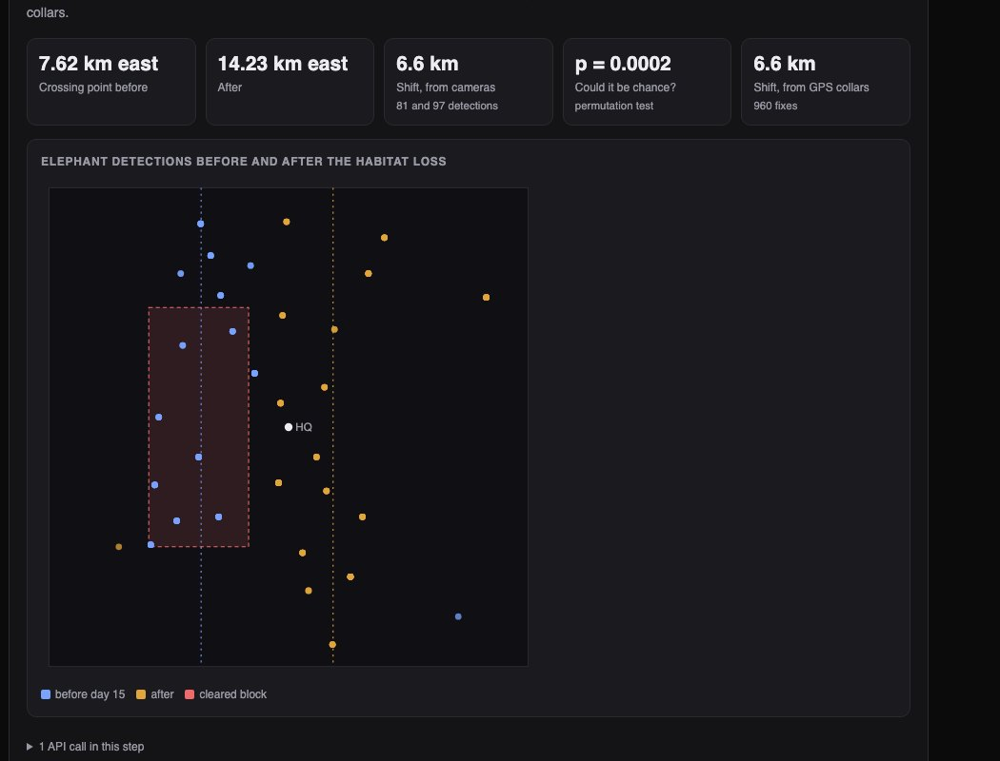

Python · Statistics · Conservation · 2026-10
What Is Happening in the Reserve at Night?
A conservation system for an invented reserve with 60 camera traps and 16 microphones. It found a planted pattern of night-time vehicles in all 12 test reserves without one false cluster, and showed why a gunshot detector that is 97% accurate would be wrong 96% of the time in the field unless its threshold is set very differently.

Built from a written blueprint as one vertical slice, on a simulated reserve: animals, sensors, vehicles and sounds are all generated, so every method can be checked against what was planted. There are no photographs or recordings: a camera detection is a label with a confidence, and a sound is five summary numbers, as if on-device models had already run. Not built: image or audio models, real field data, device software, Kafka, Terraform, single sign-on.
01 — The problem
A reserve's camera traps and microphones produce thousands of detections a month, uploaded in bursts whenever a sensor gets a signal. Most of what looks alarming is not: an animal mislabelled as a vehicle, a branch that sounds like a shot. Rangers who are sent out for every label stop going. Can software pull the few real patterns out of the noise, and say where to patrol tomorrow?
Blueprint 6 of ten in a second build book, built as its demo scenario end to end.
02 — What I built
A Python service on PostgreSQL with a web page of maps, started by one docker compose up.
- Offline uploads: numbered batches stored exactly once, in any order.
- Where species live: counts and a model that allows for animals that were there but never caught on camera.
- Route change: a test of whether a herd has really moved.
- Night activity: vehicle patterns far beyond chance, cross-checked against sounds.
- Patrols: routes that cover the most risk in a working day.
03 — How it was built
- 01
Store each upload once
Sensors are offline most of the time. They number their batches and send them when they can: late, twice, out of order. Each batch is keyed by sensor and number, so a resend changes nothing, and the reply lists which batch numbers are still missing. In the demo month 76 of 2,356 batches were duplicates and one camera delivered five days late.
INSERT INTO sync_batches (sensor_id, seq, ...) VALUES (...) ON CONFLICT DO NOTHING RETURNING seq - 02
Three ways to count leopards
Leopards truly used 23% of camera sites. Trusting every label said 82%. Counting only very confident labels said 15%, because a leopard is caught about one day in twenty-five and many sites never caught theirs. A standard ecology model that allows for missed detections said 31%. Across 12 test reserves that model was no better than the plain confident count: it fixed the undercount and overshot by as much, because one confident mislabel counts as "present". I report that as found.
like = psi * p ** d * (1 - p) ** (k - d) + (1 - psi) * (d == 0) - 03
Has the herd really moved?
After habitat was cleared, elephant detections sat 6.6 km further east. To check that is not luck, the before and after labels are shuffled 4,000 times: a shift that large appeared in fewer than 1 shuffle in 1,000. Eight GPS collars independently gave the same 6.6 km.
hits = sum(abs(q[len(a):].mean() - q[:len(a)].mean()) >= abs(obs) for q in shuffles) - 04
Raise a pattern, not a label
In the demo 23 cameras logged a "vehicle" at night at some point. Only one place is raised: three cameras on the boundary track with confident detections on six nights, a pattern with roughly a 1 in 10,000 chance of arising from stray mislabels, and with engine sounds on five of those nights.
flagged = {c: v for c, v in flagged.items() if v[1] < 0.001} - 05
Set the alarm for the field, not the test
The sound classifier is 96.6% accurate on test data where one sound in five is a gunshot. In a reserve it is more like one in a thousand. At the usual threshold, 96 of every 100 alerts would be false. So the threshold is set from the false-alarm rate at realistic rarity: about a quarter of alerts are real, at the cost of missing 42% of gunshots. That is a real cost, stated in every reply.
field = tpr * PREVALENCE / (tpr * PREVALENCE + fpr * (1 - PREVALENCE))
04 — Results
The demo month: the planted vehicle pattern was found (three cameras, five of its six nights plus one stray), 2 of 3 gunshots raised alerts, and the herd's shift was measured at 6.6 km (true: 6.5).

Across 12 other simulated reserves:
| This build | Simple way | |
|---|---|---|
| Vehicle pattern | 12 of 12 | – |
| False clusters | 0 | 28 sites each |
| Alerts (real) | 47 (16) | 3,750 (35) |
| Risk patrolled | 90% | 75% |
Simple ways: act on any night "vehicle" label; alert on any short, loud sound; patrol the boundary. There were 36 real gunshots, so the strict detector missed 20 of them.
Checks. 28 tests, and a load test that earned its keep: one endpoint re-ran a 4,000-shuffle test on every request and took 2.5 seconds under load. Keeping the result until new data arrives brought that to 72 ms.
05 — What I'd do next
- An occupancy model that allows for false detections, which is where this one goes wrong.
- Real camera-trap images with an on-device classifier.
- Outcome records, so patrol plans can be judged on what they prevent.